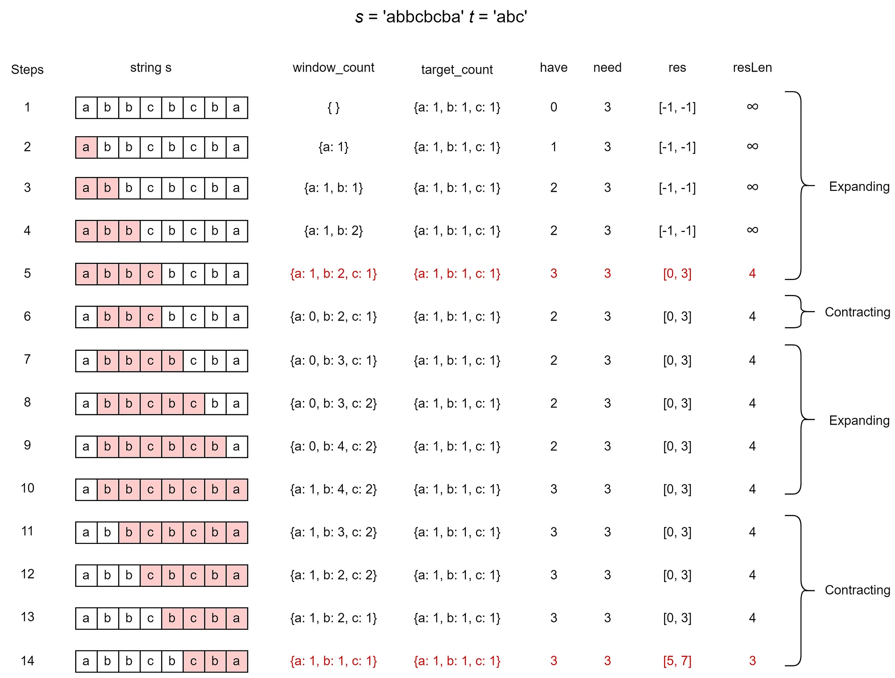

s and t of lengths m and n respectively, return the minimum window substring of s such that every character in t (including duplicates) is included in the window. If there is no such substring, return the empty string "".
Example 1:
Input: s = "ADOBECODEBANC", t = "ABC"
Output: "BANC"
Explanation: The minimum window substring "BANC" includes 'A', 'B', and 'C' from string t.
Example 2:
Input: s = "a", t = "a"
Output: "a"
Explanation: The entire string s is the minimum window.
Example 3:
Input: s = "a", t = "aa"
Output: ""
Explanation: Both 'a's from t must be included in the window.
Since the largest window of s only has one 'a', return empty string.
s.t.count variable representing the total number of characters from t that we still need to find in the current window. Initially, it's the length of t.right pointer:
right is needed (its count in the map is > 0), decrement the count.right forward.count == 0, it means our current window contains all characters of t. Now, try to shrink the window from the left to find the minimum length:
left in the map.count variable.left forward to shrink the window.
Step 1: Expand window
Add characters → decrease freq
Step 2: Valid window found (count == 0)
Step 3: Shrink window
Remove left char → increase freq
If a required char is removed → window becomes invalid
Step 4:
👉 Now the window is already ready for next expansion
👉 No manual adjustment needed
Initialize map of size 128 with frequencies of chars in t
left = 0, right = 0, minLen = infinity, minStart = 0
count = length of t
While right < length of s:
char c = s[right]
If map[c] > 0:
count--
map[c]--
right++
While count == 0: // Window is valid
If right - left < minLen:
minLen = right - left
minStart = left
char leftChar = s[left]
map[leftChar]++
If map[leftChar] > 0: // We removed a required character
count++
left++
Return minLen == infinity ? "" : s.substring(minStart, minStart + minLen)
Given two strings s and t, return the minimum window in s which will contain all the characters in t.
class GfG {
public static String minWindow(String s, String p) {
int len1 = s.length();
int len2 = p.length();
if (len1 < len2)
return "";
int[] countP = new int[256];
int[] countS = new int[256];
// Store occurrence of characters of P
for (int i = 0; i < len2; i++)
countP[p.charAt(i)]++;
int start = 0, start_idx = -1, min_len = Integer.MAX_VALUE;
int count = 0;
for (int j = 0; j < len1; j++) {
char currChar = s.charAt(j);
// Count occurrence of characters of string S
countS[currChar]++;
// If S's char matches with P's char, increment count
if (countP[currChar] > 0 && countS[currChar] <= countP[currChar]) {
count++;
}
// If all characters are matched
if (count == len2) {
// Try to minimize the window
char startChar;
while (countS[startChar = s.charAt(start)] > countP[startChar] || countP[startChar] == 0) {
if (countS[startChar] > countP[startChar]) {
countS[startChar]--;
}
start++;
}
// Update window size
int len = j - start + 1;
if (min_len > len) {
min_len = len;
start_idx = start;
}
}
}
if (start_idx == -1)
return "";
return s.substring(start_idx, start_idx + min_len);
}
public static void main(String[] args) {
String s = "timetopractice";
String p = "toc";
String res = minWindow(s, p);
System.out.println(res);
}
}
public class Main {
public static void main(String[] args) {
String s1 = "ADOBECODEBANC", t1 = "ABC";
System.out.println("Input: s = " + s1 + ", t = " + t1 + " | Output: " + minWindow(s1, t1));
String s2 = "a", t2 = "a";
System.out.println("Input: s = " + s2 + ", t = " + t2 + " | Output: " + minWindow(s2, t2));
String s3 = "a", t3 = "aa";
System.out.println("Input: s = " + s3 + ", t = " + t3 + " | Output: " + minWindow(s3, t3));
}
public static String minWindow(String s, String t) {
if (s == null || t == null || s.length() == 0 || t.length() == 0) {
return "";
}
// Array to store the frequency of characters in t
int[] map = new int[128];
for (char c : t.toCharArray()) {
map[c]++;
}
int left = 0, right = 0;
int minLen = Integer.MAX_VALUE;
int minStart = 0;
int count = t.length(); // Total characters needed to form a valid window
while (right < s.length()) {
char rightChar = s.charAt(right);
// If the character is needed, decrement the required count
if (map[rightChar] > 0) {
count--;
}
// Decrease the frequency in the map and move right pointer
map[rightChar]--;
right++;
// When count == 0, the window contains all characters from t
while (count == 0) {
// Update minimum window length and start index
if (right - left < minLen) {
minLen = right - left;
minStart = left;
}
char leftChar = s.charAt(left);
// Restore the character frequency in the map
map[leftChar]++;
// If the character was required (frequency > 0), increment the required count
if (map[leftChar] > 0) {
count++;
}
// Move left pointer to shrink the window
left++;
}
}
return minLen == Integer.MAX_VALUE ? "" : s.substring(minStart, minStart + minLen);
}
}
Time Complexity: O(m + n), where m is the length of s and n is the length of t. Both left and right pointers traverse the string s at most once.
Space Complexity: O(1) or O(128) constant space, since we use an array of size 128 to store character frequencies.
Output:
Input: s = ADOBECODEBANC, t = ABC | Output: BANC
Input: s = a, t = a | Output: a
Input: s = a, t = aa | Output: